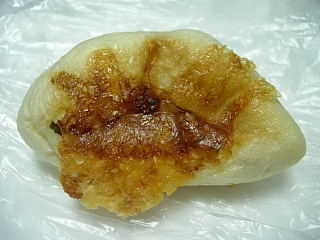
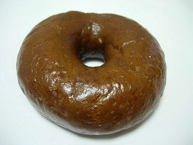
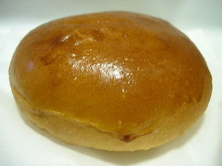
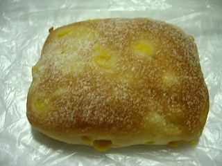

ラピタ本店の餃子パン
2009/8/5
見た目も餃子風な餃子パンです。

肉まんぽい商品かなと思ったんですが、ちゃんと餃子らしい味がしました。凄いですね。
パンなのでふっくらとした食感ですし、ギョウザの具が沢山入っている訳でもないんですが、食べると餃子味がしっかりしました。面白い商品ですね。
島根県出雲市今市町87
2009/8/5
見た目も餃子風な餃子パンです。

肉まんぽい商品かなと思ったんですが、ちゃんと餃子らしい味がしました。凄いですね。
パンなのでふっくらとした食感ですし、ギョウザの具が沢山入っている訳でもないんですが、食べると餃子味がしっかりしました。面白い商品ですね。
2009/5/20
ベーグルですが、味が付いているのでそのままでも食べやすかったです。
おやつになりますね。

ベーグルなのでちょっとどっしり感がありますが、黒糖味が程よく、重たい味になってなく良かったです。
2009/1/14
小さめのコッペパンの中にいちじくの姿煮がドーンと入ってました。

多伎のイチジクが、しかも姿煮で入っているので、いちじく味がたっぷり味わえます。豪華ですね。
地元の食材ってことで、いちじくを使ったパンが色んな所から出てますが、私が知ってるものの中ではこれが一番量が多いですね。
姿煮っていうとちょっと煮物っぽくて抵抗あるんですが、味は普通にジャムです。なので、いちじくジャムパンですね。
2008/8/21
コーンパンっていうと、マヨネーズ風味の惣菜パンがよくあると思うんですけど、ここのは違ってました。

ふっくらとしたパンの中にコーンが入ってて、あっさりとした味で、食事パン的な感じでした。
コーンに当たると、コーンの甘さがしっかりして美味しかったです。
2008/8/4
今までラピタ本店にはモンマルトさんが入っていたんですが、先日閉店してしまっていました。
空き店舗スペースが寂しいなーなんて思ってたんですが、今日の折込広告にパン屋オープンとなっていました。
今度行こうと思います。
JAしまねが運営するスーパー「ラピタ」内のパンコーナーです。